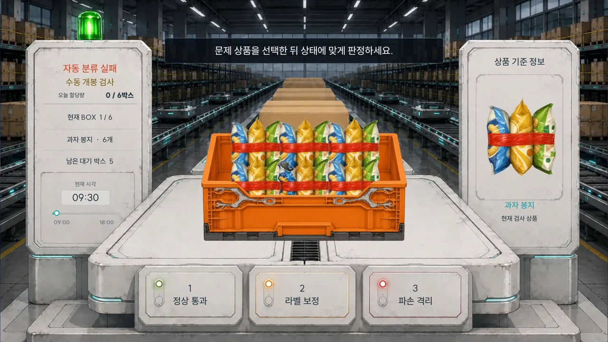
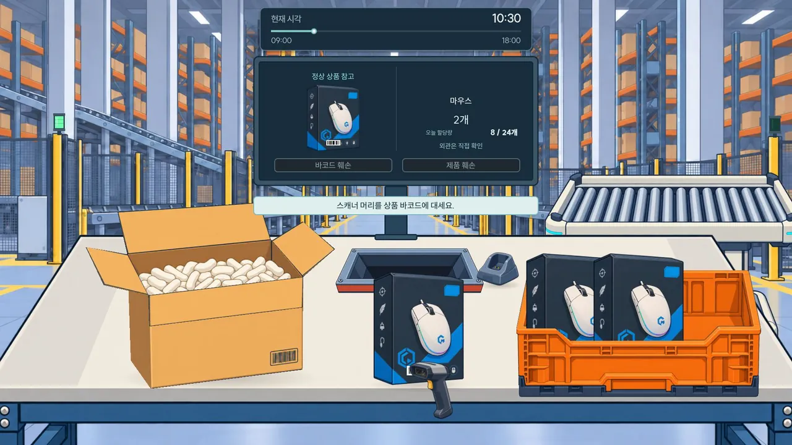
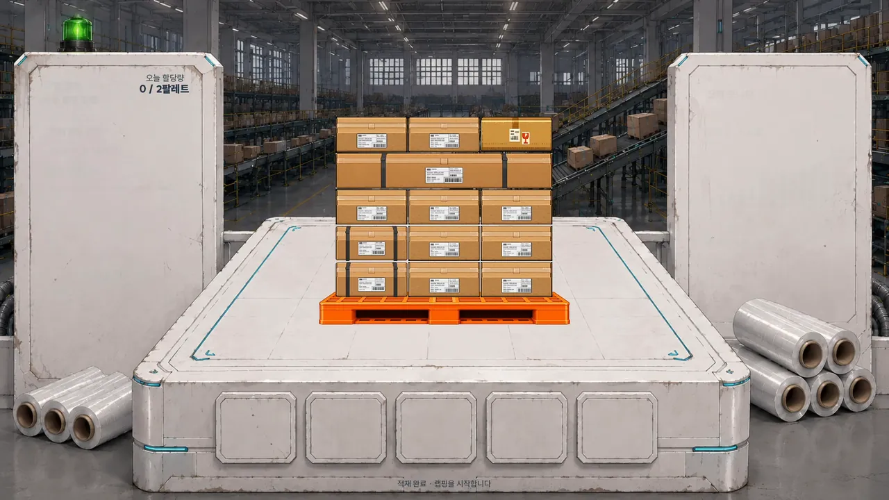
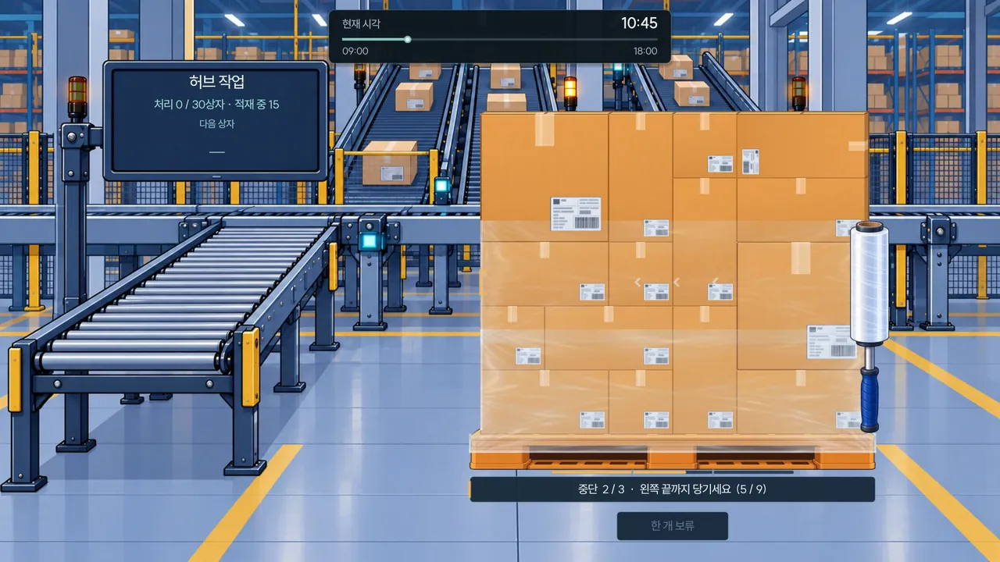
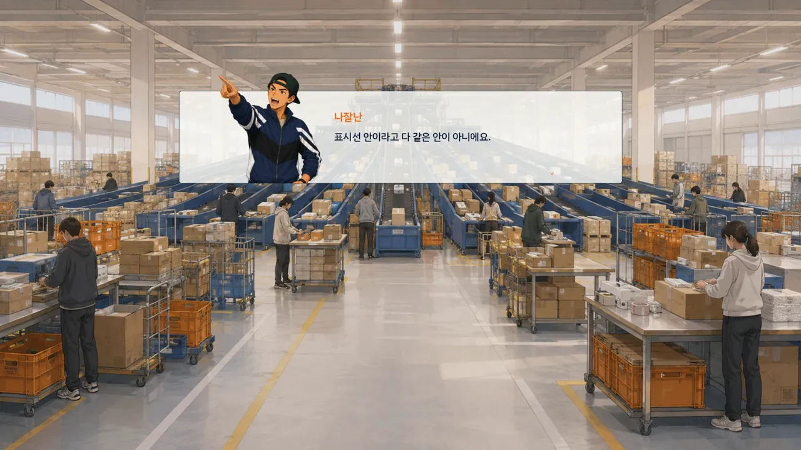
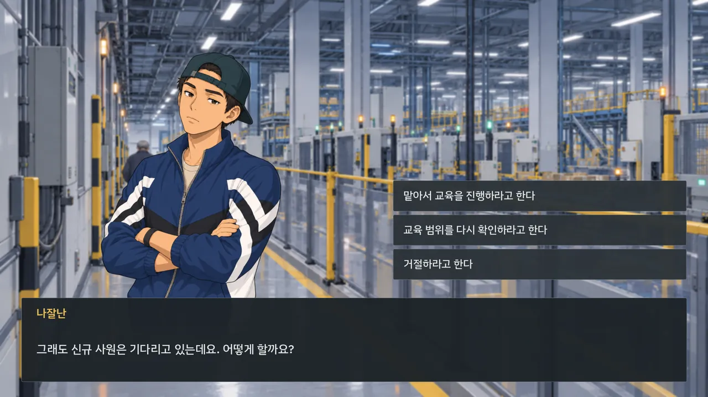
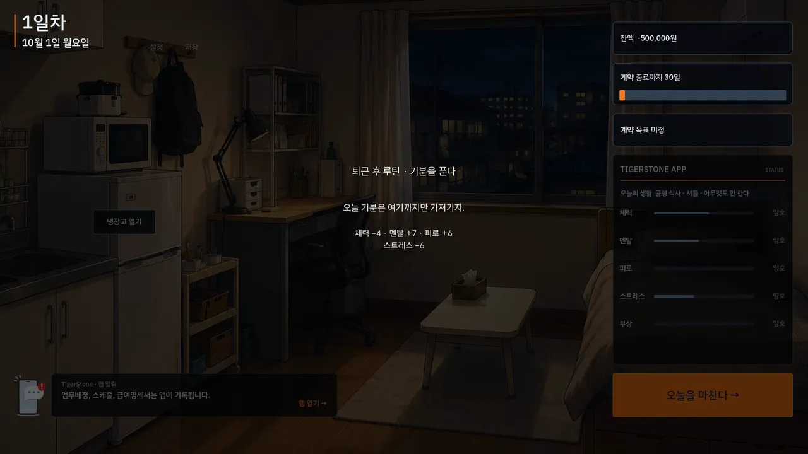
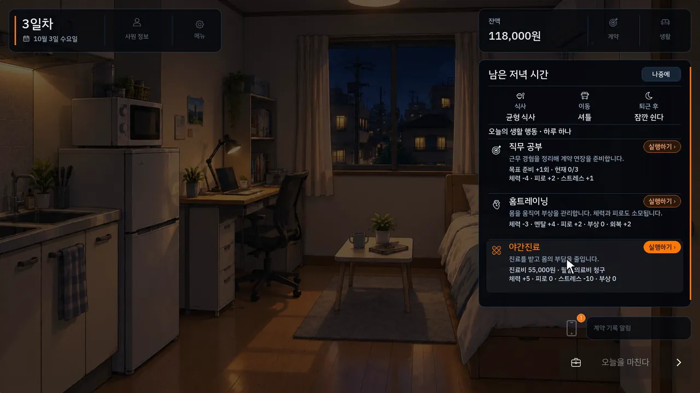
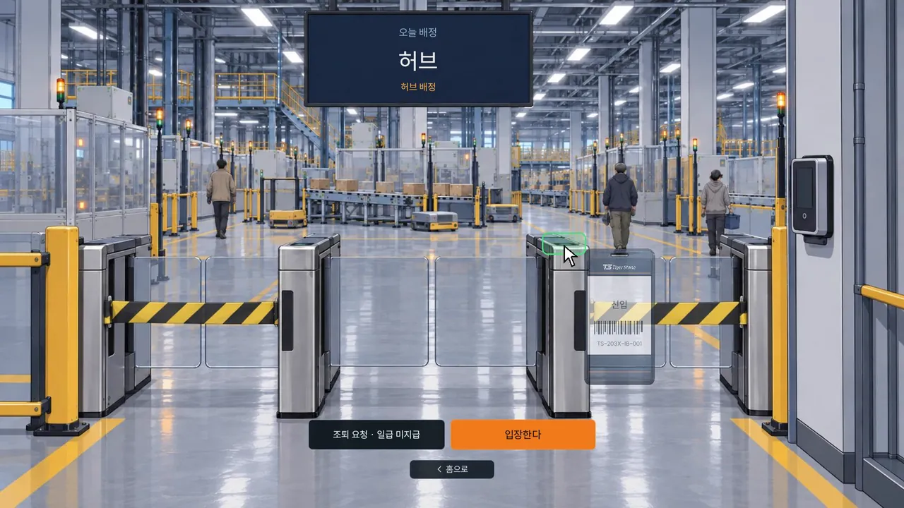

기획부터 출시까지
물류센터 업무와 퇴근 후 생활을 하나의 플레이 흐름으로 연결했습니다.
왜 만들었나
- 취업이 쉽지 않던 시기에 물류센터에서 일하며, 시간과 돈을 맞바꾸는 노동과 그 안에서 느낀 감정을 게임으로 체험하게 해 보고 싶었습니다.
무엇을 설계했나
- 자동화된 근미래 물류센터에서 30일간 계약직으로 살아남는 노동·생활 시뮬레이션 구조
- 입고·출고·허브 미니게임에 할당량, 업무 실적, 현장 선택, 체력·멘탈·피로·급여·회사 평가를 연동
- 퇴근 후 소비와 생활 관리, 동료 관계, 누적된 선택에 따라 달라지는 다중 엔딩
출시까지의 결정
- 단순 물류 작업 게임에서 벗어나, 노동의 압박·생계·인간관계를 다루는 30일 생존 시뮬레이션으로 발전시켰습니다.
- 별도 데모 대신 본편 출시를 선택했습니다.
- 제작 범위를 조정하고 오류를 수정해 STOVE에 출시했습니다.
AI에 맡긴 일, 직접 한 일
AI를 적극 활용하되 기획, 시스템 설계, 밸런스, 그래픽 방향은 직접 결정하고, 반복적인 수정과 검증을 거쳐 완성했습니다.
AI에게 맡긴 일
- 코드 작성: VS Code에서 시작해 대부분 Codex로 작업
- 기획 마무리와 검수: Claude
- 이미지·영상 생성: ChatGPT, Seedance
내가 직접 한 일
- 게임 기획과 세계관, 30일 구조
- 시스템 설계와 밸런스
- 그래픽 방향 결정과 리뉴얼
- 반복 검증과 QA, 출시 결정
리뉴얼: 그래픽을 통일하고 출근 과정을 더했습니다
전체 그래픽을 바꿔 화면마다 통일감을 높였고, 출근 과정을 더 실감 나게 표현하려고 출근 게이트를 추가했습니다. 버그도 수정했습니다. 변화가 가장 큰 미니게임부터 비교합니다.
입고 미니게임


허브 미니게임


대화와 저녁 화면





영상
트레일러와 개발기도 직접 편집했습니다. 누르면 이 페이지에서 재생됩니다.
공식 트레일러
리뉴얼 버전 플레이 소개, 40초
개발기
세계관 제작 과정, 39초
다음 작업: 칼이쓰마 상세페이지
다음 작업 보기